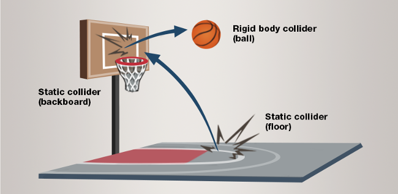
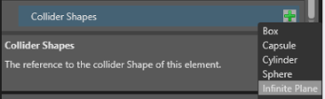
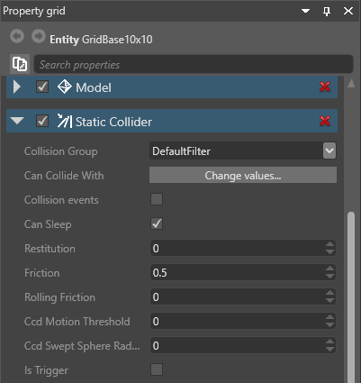

静的コライダー
初級 デザイナー
静的コライダーは、重力や衝突などの力では動きませんが、他の物理オブジェクトがそれに対して衝突することができます。一般的な静的コライダーは、壁、床、大きな岩などの強力な不動オブジェクトです。

静的コライダーを追加する
静的コライダーにするエンティティを選択します。
［Property grid］で［Add component］をクリックして、［Static Collider］を選択します。

エンティティの形状と一致するようにコライダーの形状を設定します。そのためには、［Property grid］で［Static Collider］コンポーネントを展開してプロパティを表示します。
［Collider Shapes］の隣の
 (［Add a new item to the list］) をクリックして、目的の形状を選択します。
(［Add a new item to the list］) をクリックして、目的の形状を選択します。
静的コライダーのプロパティ
静的コライダーのプロパティは［Property grid］で調整できます。

| プロパティ | 説明 |
|---|---|
| Collision Group | オブジェクトが属している衝突グループを設定します。 |
| Can Collide With | オブジェクトが衝突するグループを設定します。 |
| Collision events | これを有効にすると、オブジェクトは衝突イベントを報告します。それをスクリプトで使用できます。物理特性には影響ありません。オブジェクトに対する衝突イベントを使用するスクリプトがない場合は、このオプションを無効にして CPU を節約します。 |
| Can Sleep | これを有効にすると、物理オブジェクトが動いていないときは、物理エンジンは物理オブジェクトを処理しません。それによって CPU を節約できます。 |
| Restitution | 衝突の後で失う、または獲得する運動エネルギーの大きさを設定します。一般的な値は 0 ～ 1 の範囲です。衝突するエンティティの反発プロパティが 0 の場合、エンティティはすべてのエネルギーを失い、衝突と同時に動かなくなります。反発が 1 の場合は、エネルギーを失わず、衝突したときと同じ速さで跳ね返ります。このプロパティを使用して、剛体の「跳ね返り方」を変更します。 |
| Friction | 表面の摩擦を設定します。 |
| Rolling Friction | 転がり摩擦を設定します。 |
| Ccd Motion Threshold | 連続衝突検出 (CCD) を引き継ぐ速度を設定します。CCD は、高速で移動するエンティティ (弾丸など) が誤って他のエンティティを通り抜けないようにします。 |
| Ccd Swept Sphere Radius | 連続衝突検出の間に 2 つの物理フレームの間の位置を含む境界球面の半径を設定します。 |
| Is Trigger | 静的コライダーがトリガーかどうかを切り替えます。 |
実行時に静的コライダーを動かす
実行時に静的コライダーを動かす必要がある場合は、スクリプトで実現できます。
PhysicsComponent.Entity.Transform.Position += PhysicsComponent.Entity.Transform.Position + Vector3.UnitX;
PhysicsComponent.Entity.Transform.UpdateWorldMatrix();
PhysicsComponent.UpdatePhysicsTransformation();